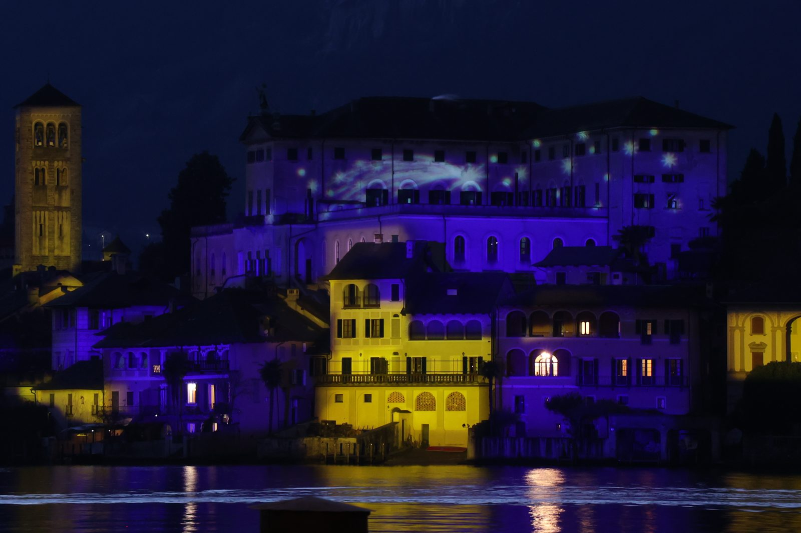
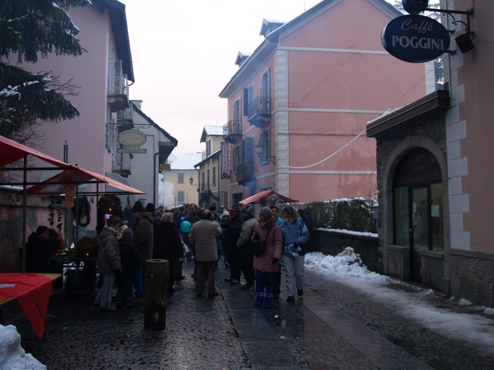
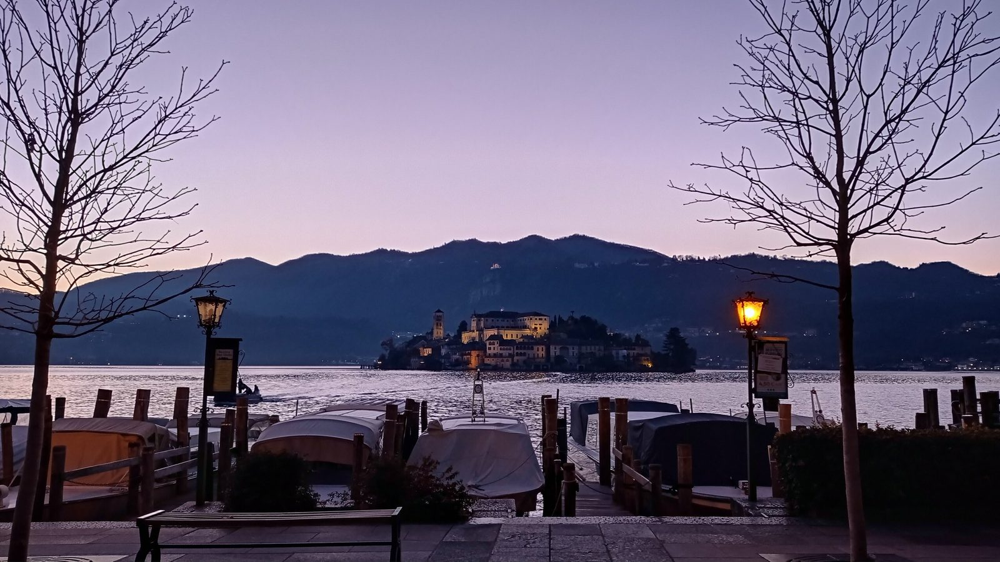
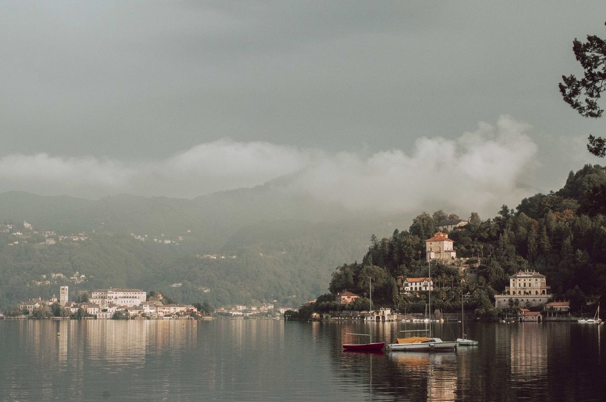

Le lac d'Orta fête Noël en petit, et c'est là l'essentiel de son charme. Pas de grand marché de style alpin qui envahit le village, pas de file d'attente pour le vin chaud, pas d'autocars. Ce qu'il y a : une île illuminée qui flotte dans la nuit, des enfants qui prennent le bateau pour aller y rendre visite au père Noël, des chants et du vin brûlé — le vin chaud à l'italienne — sur la Piazza Motta, un feu d'artifice au-dessus de l'eau à minuit le soir de la Saint-Sylvestre et, à moins d'une heure de route, certains des plus beaux marchés de Noël d'Italie du Nord. Ce guide rassemble tout cela, avec les dates 2026 que nous pouvons déjà confirmer.
Un mot sur les dates. À la mi-octobre, les villages autour du lac n'avaient pas encore publié leur programme de Noël 2026. Quand nous donnons les dates de l'an dernier, nous le précisons : elles indiquent bien à quel moment les choses ont lieu d'habitude, mais vérifiez les annonces locales sur distrettolaghi.it à l'approche des fêtes. Les dates marquées 2026 sont confirmées par les organisateurs.
Noël à Orta San Giulio : un village illuminé

Orta San Giulio n'a pas de marché de Noël à lui — bon à savoir avant d'organiser un voyage autour. Ce que fait le village, en revanche, c'est s'illuminer. En 2025, les lumières se sont allumées dans les ruelles le 7 décembre et, le même soir, l'Isola San Giulio a été illuminée ; elle l'est restée chaque nuit jusqu'à l'Épiphanie, le 6 janvier. Vues depuis la rive, dans l'air froid et immobile, la basilique et le couvent de l'île qui brillent sur l'eau noire : c'est l'image même de l'hiver au lac d'Orta.
Le reste du programme est à la taille du village, et très agréable :
- L'île du père Noël. Depuis trois ans, un dimanche de la mi-décembre, les enfants prennent le bateau de la Piazza Motta jusqu'à l'Isola San Giulio pour remettre leur lettre au père Noël. En 2025, c'était le 14 décembre, de 11h à 17h, et 5 € par enfant couvraient le bateau et un court spectacle dans un cinéma sous dôme.
- Chants et vin chaud. Le dimanche qui précède Noël, les Alpini — les anciens des troupes de montagne italiennes, cousins des chasseurs alpins — servent du vin brûlé sur la Piazza Motta, avant un concert de chorale (le 21 décembre en 2025). En 2025, une chorale avait aussi donné un concert dans l'église paroissiale Santa Maria Assunta le 7 décembre, le soir où les lumières se sont allumées.
- La veille de Noël. Le 24 décembre à 22h, le village se retrouve sur la Piazza Motta autour du vin chaud et du panettone. Les bateaux de l'île assurent un service en soirée pour que vous puissiez traverser et assister à la messe de Noël sur l'île : difficile de trouver, où que ce soit, une veillée de Noël qui ait autant d'atmosphère.
Le jour de Noël, les bateaux de l'île ne circulent pas, et le village est au plus calme. C'est une journée pour un long déjeuner — à réserver bien à l'avance — et une promenade au bord du lac.
Noël autour du lac d'Orta : marchés, patinoire et crèche vivante
Le Noël le plus animé du lac se trouve à Omegna, la petite ville tout au nord, à vingt minutes d'Orta. En 2025, son programme allait du 29 novembre au 6 janvier : des illuminations le long du lac dès la fin novembre, une patinoire dans les jardins au bord de l'eau du 8 décembre à la mi-janvier, des marchés de Noël les samedis précédant Noël, un sapin de Noël alimenté par des cyclistes qui pédalent à son pied, une procession de crèche vivante à la mi-décembre et, pour les plus courageux, une course de nage de Noël en eau froide dans la baie.
Les petits villages ont leurs propres marchés, en général le temps d'un seul week-end. Ameno, dans les collines au-dessus de la rive est, ouvre la saison fin novembre, et son parc accrobranche installe le père Noël sur un trône perché tout en haut des arbres. Gozzano, à l'extrémité sud du lac, et San Maurizio d'Opaglio, sur la rive ouest, organisent marchés et après-midi avec le père Noël dans la première quinzaine de décembre.
Grands marchés de Noël et crèches à proximité

Si c'est un vrai marché que vous cherchez — chalets en bois, artisanat, fromages et speck, odeur de châtaignes grillées —, le lac d'Orta est une très bonne base, car les plus beaux de ce coin d'Italie se font facilement dans la journée.
- Santa Maria Maggiore, Val Vigezzo — du 6 au 8 décembre 2026. Le grand rendez-vous, qui en est à sa 27e édition : plus de deux cents stands envahissent un village de montagne, de 9h30 à 18h30. Comptez environ 70 minutes en voiture. La seule route d'accès est la SS337, qui remonte la vallée depuis Domodossola ; pneus hiver ou chaînes obligatoires. Le stationnement est gratuit pour l'essentiel, et les exposants préfèrent souvent les espèces. La plus jolie façon d'y arriver est le train Vigezzina–Centovalli depuis Domodossola, mais ses places pour le marché de Noël partent vite : réservez en ligne dès leur mise en vente.
- Candelo, « Il Borgo di Babbo Natale » (le bourg du père Noël) — les week-ends du 21 novembre au 13 décembre 2026 (les 21 et 22 et les 28 et 29 novembre, du 5 au 8 et les 12 et 13 décembre, de 10h à 18h). Plus de 150 exposants dans le Ricetto, un bourg médiéval parfaitement conservé près de Biella, à environ une heure. L'entrée est payante (8 € en 2025) et le marché a beaucoup de succès auprès des familles.
- Lac Majeur. Stresa et Arona sont à une demi-heure environ. En 2025, le marché AroNatale d'Arona a réuni plus de 130 stands au bord du lac à la mi-décembre, la ville avait installé une grande patinoire, et l'Isola dei Pescatori (l'île des Pêcheurs) a été illuminée du début décembre à l'Épiphanie. Verbania propose elle aussi une longue saison de Noël, avec des patinoires.
- Domodossola, à moins d'une heure au nord, remplit son centre médiéval d'environ 160 stands le temps d'un week-end, à la mi-décembre. Plus loin, dans la Valle Antigorio, le village de Crodo met en scène les Presepi sull'acqua (« crèches sur l'eau ») : plus de soixante-dix crèches installées dans l'eau ou tout autour, visibles de jour comme de nuit du début décembre à la mi-janvier.
- Milan. Oh Bej! Oh Bej!, la foire historique de la Saint-Ambroise, saint patron de Milan, occupe les rues autour du Castello Sforzesco pendant quelques jours autour du 7 décembre. Comptez environ une heure et quart en voiture, davantage avec la circulation.
- Suisse. Le marché de Noël du centre de Lugano a lieu du 26 novembre 2026 au 6 janvier 2027, et le Winterland de Locarno, avec sa patinoire sur la Piazza Grande, du 19 novembre 2026 au 6 janvier 2027. Les deux sont à environ une heure et demie.
Le pont du 8 décembre : l'Immacolata
L'Immacolata — la fête de l'Immaculée Conception, le 8 décembre — est un jour férié en Italie et le coup d'envoi officieux de Noël. En 2026, elle tombe un mardi : beaucoup d'Italiens feront le pont le lundi, pour quatre jours de congé du samedi 5 au mardi 8 décembre. Ce week-end-là, vous pouvez combiner Santa Maria Maggiore et Candelo, ouverts tous les deux, et les festivités de la Saint-Ambroise à Milan le lundi 7 décembre. Pour changer, le 8 décembre 2026, un train à vapeur historique relie Novare à Varallo, qui abrite le plus ancien de tous les Sacri Monti ; départ à 9h10, retour à 17h.
Attendez-vous à ce que les grands marchés soient au plus fort de leur affluence ces jours-là. Si vous le pouvez, allez à Santa Maria Maggiore le dimanche matin, ou arrivez tôt.
Nouvel An au lac d'Orta : la Saint-Sylvestre et son feu d'artifice

Le soir de la Saint-Sylvestre, Orta San Giulio vit son moment le plus animé de l'hiver. En 2025, la Piazza Motta a accueilli un concert à partir de 23h, un feu d'artifice au-dessus du lac à minuit, puis un DJ set ; il y avait eu un feu d'artifice en 2024 et en 2022 aussi, c'est donc devenu une tradition. Le regarder éclater au-dessus de l'eau, devant l'île, depuis la rive, un verre à la main : difficile de faire mieux. Omegna organise une fête gratuite dans le centre-ville, avec de la musique live à partir de 23h.
Pour le cenone, le long dîner du réveillon de la Saint-Sylvestre, réservez des semaines à l'avance : les restaurants ouverts ce soir-là se remplissent tôt, et beaucoup proposent un menu unique. Le jour de l'An, les bateaux de l'île suivent un horaire spécial (de 10h à 12h et de 14h à 17h). Et si vous voulez commencer l'année comme il se doit, Baveno, sur le lac Majeur, organise un bain du Nouvel An, Un tuffo nel nuovo anno (« un plongeon dans la nouvelle année »), le 1er janvier à midi.
L'Épiphanie : la Befana
En Italie, Noël se termine le 6 janvier avec la Befana, une vieille femme à l'allure de sorcière qui vole sur un balai et remplit de bonbons — ou de charbon — les chaussettes des enfants. Au lac d'Orta, la version la plus amusante est à Ameno : en janvier 2026, toute une volée de Befane costumées a dévalé la tyrolienne du parc accrobranche à partir de 14h, avant un moment musical. Sur le lac Majeur, la Befana arrive en bateau : à Feriolo, près de Baveno, elle a débarqué à 18h le 6 janvier 2026.

Ce qui est ouvert en hiver
- Les bateaux pour l'Isola San Giulio circulent toute l'année depuis la Piazza Motta, environ toutes les quinze minutes, avec les exceptions vues plus haut (un service en soirée le 24 décembre, aucun le jour de Noël, des horaires réduits le 1er janvier). La ligne publique de navigation qui fait le tour du lac, en revanche, ne fonctionne que de mars à octobre.
- Le Sacro Monte reste ouvert tout l'hiver. Du 25 octobre 2026 au 27 mars 2027, les chapelles sont ouvertes de 9h30 à 16h en semaine, et jusqu'à 16h30 le week-end et les jours fériés. Allez-y en fin de matinée, quand le soleil bas passe entre les arbres. Notre guide du Sacro Monte donne tous les détails.
- La basilique San Giulio se visite tout l'hiver, mais pas pendant les offices ; les horaires changent avec la saison, vérifiez-les sur place.
- Les restaurants. Certains ferment quelques semaines entre novembre et février. À Noël et au Nouvel An, la plupart sont ouverts mais pleins : réservez tout. Notre guide où manger au lac d'Orta présente le reste, de la Villa Crespi aux trattorias.
- La météo. En décembre, le temps au bord du lac est froid et souvent clair, avec de la brume sur l'eau le matin. La neige sur la rive est rare, mais les montagnes derrière sont blanches. Prévoyez plusieurs couches et de bonnes chaussures pour les pavés mouillés ; si vous montez au Val Vigezzo, vérifiez la météo et vos pneus.
Pour en savoir plus sur la basse saison en général, lisez notre guide le lac d'Orta en automne et en hiver.
Une maison au bord de l'eau pour l'hiver
La Villa Volpe est une maison de plain-pied sur la rive est, côté soleil, juste à la sortie d'Orta San Giulio, avec le chauffage dans toutes les pièces, un séjour face au lac et un jardin qui descend jusqu'à sa propre plage. L'hiver, c'est un endroit merveilleusement paisible où rentrer après une journée de marchés. Les semaines de Noël et du Nouvel An partent toujours en premier, mais l'hiver est long, et les semaines plus calmes comptent parmi les plus belles de l'année. Si vous pensez à un séjour plus long, sachez que la maison se loue aussi au mois, d'octobre à mai : écrivez-nous à villavolpeorta@gmail.com.
Questions fréquentes
Y a-t-il un marché de Noël à Orta San Giulio ?
Pas de marché à proprement parler. Orta San Giulio fête Noël avec des illuminations, une île éclairée, des concerts et des animations sur la Piazza Motta. Les marchés les plus proches sont à Omegna, au nord du lac, et dans les petits villages alentour ; les grands se trouvent à Santa Maria Maggiore, à Candelo et au bord du lac Majeur.
Quand a lieu le marché de Noël de Santa Maria Maggiore en 2026 ?
Du dimanche 6 au mardi 8 décembre 2026, de 9h30 à 18h30. Il est à environ 70 minutes de voiture du lac d'Orta ; pneus hiver ou chaînes obligatoires sur la route qui remonte la vallée.
Y a-t-il un feu d'artifice au lac d'Orta pour le Nouvel An ?
Oui. Ces dernières années, Orta San Giulio a tiré un feu d'artifice au-dessus du lac à minuit, précédé d'un concert sur la Piazza Motta. Vérifiez le programme 2026 en décembre.
Peut-on visiter l'Isola San Giulio à Noël ?
Oui. Les bateaux de la Piazza Motta circulent tout l'hiver, environ toutes les quinze minutes, avec un service en soirée pour la messe de Noël le 24 décembre. Il n'y a pas de bateau le jour de Noël, et les horaires sont réduits le 1er janvier.
Le Sacro Monte d'Orta est-il ouvert en hiver ?
Oui. Du 25 octobre 2026 au 27 mars 2027, les chapelles sont ouvertes de 9h30 à 16h en semaine, et de 9h30 à 16h30 le week-end et les jours fériés. L'église San Nicolao est ouverte tous les jours de 9h à 18h.
Photo de couverture : Piazza Motta, Cipsyna, CC BY-SA 4.0, via Wikimedia Commons.